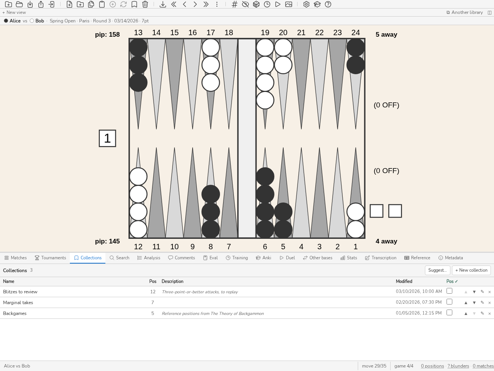

Ανάλυση, σχόλια και αναζήτηση
Πίνακας Ανάλυσης
Ο πίνακας Ανάλυσης (CTRL-L) εμφανίζει τα δεδομένα ανάλυσης της τρέχουσας θέσης, εισηγμένα από το eXtreme Gammon (XG), το GNUbg, το BGBlitz ή το gammonNet. Παρουσιάζει τις καλύτερες εναλλακτικές (κινήσεις πουλιών ή αποφάσεις κύβου) μαζί με τις τιμές equity τους και τα αντίστοιχα σφάλματα. Το πλήκτρο d εναλλάσσεται μεταξύ της ανάλυσης κινήσεων πουλιών και της ανάλυσης κύβου. Κατά την πλοήγηση σε έναν αγώνα, η κίνηση που παίχτηκε πραγματικά επισημαίνεται στη λίστα των εναλλακτικών. Πατήστε CTRL-L ή εκτελέστε την εντολή list για να εμφανίσετε ή να αποκρύψετε τον πίνακα.
Μια θέση χωρίς ανάλυση το δηλώνει, με ένα κουμπί Αξιολόγηση που την ανοίγει στον πίνακα Eval.
Το κουμπί Πρόκληση της γραμμής εργαλείων, μετά από εκείνο της μέτρησης pip (πλήκτρο m), σας επιτρέπει να αποφασίσετε πριν δείτε την ανάλυση ενώ περιηγείστε θέσεις: αποτελέσματα αναζήτησης, ανασκόπηση αγώνα, επανάληψη των λαθών σας. Ενεργό, καλύπτει με μια γκρι ζώνη όλη την ανάλυση του πίνακα, πούλια και κύβο· ένα κλικ στη ζώνη την αποκαλύπτει. Επιστρέφει σε κάθε αλλαγή θέσης. Η πρόκληση είναι μάσκα προβολής: η αποκάλυψη δεν καταγράφει τίποτα στη βάση. Η ρύθμιση διατηρείται μέχρι το κλείσιμο του blunderDB, όπως εκείνη της μέτρησης pip. Στην ανασκόπηση αγώνα, η πρόκληση κρύβει επίσης τις σημάνσεις, τις απώλειες και τη δυσκολία της λίστας κινήσεων· εκείνες της εμφανιζόμενης κίνησης αποκαλύπτονται μαζί με την ανάλυσή της.
Κάτω από τους πίνακες, μια πρόταση λέει ενίοτε τι κόστισε η απόφαση που παίχτηκε και γιατί: «Χάνετε 120 mp: η κίνηση που παίχτηκε αφήνει τρία blots εκεί όπου η 13/7 8/7 αφήνει μόνο ένα.» Προέρχεται από έξι μετρήσιμους κανόνες — την έκθεση, ένα σημείο του σπιτιού που φτιάχτηκε ή χάθηκε, τις πιθανότητες gammon που εγκαταλείφθηκαν, μια ασφάλεια που κοστίζει περισσότερο απ” όσο αποδίδει, και τις δύο κατευθύνσεις ενός λάθους κύβου (διπλασιασμός πολύ αργά ή πολύ νωρίς, αποδοχή πολύ χαλαρή ή πάσο πολύ σφιχτό).
Ο κανόνας που μετράει είναι η σιωπή: η πρόταση εμφανίζεται μόνο όταν ένας κανόνας εφαρμόζεται με βεβαιότητα, και για λάθος πάνω από το κατώφλι από το οποίο οι μηχανές συμφωνούν ότι πρόκειται για λάθος. Τον υπόλοιπο χρόνο δεν υπάρχει πρόταση — ούτε άδειο πλαίσιο, ούτε «δεν ξέρουμε». Μια λανθασμένη εξήγηση κοστίζει περισσότερο από καμία: διδάσκει κάτι ανακριβές.
Η ίδια πρόταση συνοδεύει το λάθος εκεί όπου μόλις το κάνατε: στο πίσω μέρος μιας κάρτας Anki, κάτω από την αποκαλυμμένη ανάλυση, και στην κρίση του κουίζ της άσκησης Απόφαση, κάτω από το κόστος σε mp. Ισχύουν οι ίδιοι κανόνες σιωπής: μια σωστή κίνηση, ή ένα λάθος που κανένας κανόνας δεν εξηγεί, δεν προσθέτει τίποτα.
Όταν μια θέση έχει κριθεί από πολλές μηχανές, μια λωρίδα στην κορυφή του πίνακα τις βάζει δίπλα δίπλα: μία γραμμή ανά μηχανή, με το βάθος της και την απάντησή της — την ετυμηγορία του κύβου, ή τη δική της καλύτερη κίνηση. Λέει πρώτα αν συμφωνούν, και η διαφωνία είναι που τη δικαιολογεί: «το XG λέει διπλασιασμός, αποδοχή· το gammonNet λέει χωρίς διπλασιασμό» διαβάζεται με μια ματιά, εκεί που έπρεπε να συγκρίνεις δύο πίνακες διαγώνια.
Η καλύτερη κίνηση μιας μηχανής είναι η καλύτερη αυτής της μηχανής: η λίστα των υποψήφιων κινήσεων είναι ταξινομημένη κατά ισοδυναμία, με όλες τις μηχανές ανακατεμένες, οπότε το πρώτο της στοιχείο δεν είναι η καλύτερη κίνηση καμιάς τους ειδικά.
Η λωρίδα εμφανίζεται μόνο όταν υπάρχουν πράγματι πολλές μηχανές, και υπάρχει μόνο σε αυτόν τον πίνακα: ο πίνακας Eval παρουσιάζει μία απόφαση, εκείνη της ενσωματωμένης μηχανής (ADR-0017), και μια σύγκριση δεν θα είχε εκεί θέση.
Οι κινήσεις γράφονται όπως διαβάζονται στο ταμπλό, εδώ όπως και στον πίνακα Eval: το λιγότερο προχωρημένο πούλι κινείται πρώτο, και ένα πούλι που χρησιμοποιεί διαδοχικά περισσότερα ζάρια γράφεται μία μόνο φορά — ένα 64 που παίζεται με το ίδιο πούλι διαβάζεται 24/14, και 24/14* αν χτυπά κατά την άφιξη. Η λεπτομέρεια της διαδρομής επανεμφανίζεται μόνο όταν λέει κάτι παραπάνω: ένα χτύπημα καθ” οδόν διατηρεί το ενδιάμεσο σημείο του, 24/18* 18/14, αλλιώς το χτύπημα στο 18 θα εξαφανιζόταν από τη σημειογραφία.
Η ισοδυναμία μιας εισαγόμενης ανάλυσης ακολουθεί τον ίδιο κανόνα με τον πίνακα Eval: η στήλη δηλώνει το δικό της πλαίσιο αναφοράς, «Equity (money)» ή «Equity (match)» ανάλογα με το σκορ της αναλυόμενης θέσης, ποτέ ένα απλό «Equity» χωρίς ένδειξη κλίμακας. Οι κανόνες Jacoby και Beaver που ισχύουν σε μια θέση money game εμφανίζονται επίσης, ως ετικέτες κάτω από τον πίνακα απόφασης κύβου.
Rollouts
Το πάνελ Ανάλυση μπορεί να κάνει rollout σε μια θέση: να παίξει εκατοντάδες παρτίδες από κάθε επιλεγμένη κίνηση ή από κάθε ενέργεια του κύβου, για να διακρίνει δύο επιλογές που η άμεση αξιολόγηση μόλις ξεχωρίζει. Στον πίνακα των υποψήφιων κινήσεων, το Ctrl+κλικ προσθέτει ή αφαιρεί μια κίνηση από την επιλογή και το Shift+κλικ την επεκτείνει ως την κίνηση που πατήθηκε· το απλό κλικ επιλέγει μία μόνο κίνηση, όπως συνήθως. Ένα δεξί κλικ στην επιλογή — ή σε άλλη κίνηση, που γίνεται η επιλογή — ανοίγει ένα μενού, του οποίου η εντολή Rollout (Στάνταρ) ξεκινά αμέσως το rollout των επιλεγμένων κινήσεων με την επιλεγμένη ρύθμιση. Σε απόφαση κύβου, το δεξί κλικ κάνει rollout ολόκληρη την απόφαση. Το πλήκτρο Shift+R του πάνελ κάνει το ίδιο (χωρίς επιλογή, κάνει rollout τους καλύτερους υποψηφίους της θέσης), όπως και η εντολή rollout (ψευδώνυμο ro). Κατά τη διάρκεια του rollout, μια λεπτή γραμμή κάτω από τον πίνακα παρακολουθεί τις παρτίδες που παίχτηκαν· το Ακύρωση, η εντολή Ακύρωση του rollout του μενού, το Esc ή ξανά το Shift+R το σταματούν χωρίς να γράψουν τίποτα. Η ρύθμιση — Γρήγορο, Στάνταρ ή Ελεύθερο — επιλέγεται στην καρτέλα gammonNet των ρυθμίσεων (βλ. ρυθμίσεις).
Το ίδιο μενού προσφέρει Αντιγραφή θέσης και ανάλυσης, την εικόνα που αντιγράφει το CTRL-X CTRL-X: το ταμπλό και την κορυφή της λίστας κινήσεων ή ολόκληρη την ανάλυση του κύβου. Μόλις επιλεγεί μια κίνηση, προστίθεται μια δεύτερη επιλογή, Αντιγραφή θέσης και επιλεγμένων κινήσεων: η εικόνα κρατά μόνο αυτές τις κινήσεις, με τη σειρά της κατάταξης, καθεμία με τη θέση της ανάμεσα σε όλες τις υποψήφιες και με την απόκλισή της από την καλύτερη κίνηση της θέσης, όχι από την καλύτερη της επιλογής. Σε απόφαση κύβου εμφανίζεται μόνο η πρώτη. Τα κελιά των πινάκων ανάλυσης δεν επιλέγονται ως κείμενο: τα κλικ επιλογής δεν αφήνουν επισήμανση πάνω τους.
Το αποτέλεσμα αποθηκεύεται δίπλα στην ανάλυση, ποτέ στη θέση της: μια εισαγόμενη ανάλυση δεν τροποποιείται. Κάθε κίνηση που έγινε rollout φέρει το αποτέλεσμά της στη δική της γραμμή του πίνακα, σε μια στήλη Rollout που εμφανίζεται μόνο όταν η θέση έχει rollout: την ισοδυναμία (equity) και το μισό πλάτος του διαστήματος εμπιστοσύνης 95 % της, στην κλίμακα της στήλης ισοδυναμίας. Η τοποθέτηση του δείκτη πάνω στο κελί δίνει τις λεπτομέρειες: την τυπική απόκλιση, το JSD (η απόσταση από την καλύτερη κίνηση σε τυπικές αποκλίσεις της διαφοράς: από το όριο και μετά η κίνηση κρίνεται και δεν παίζεται πια), τον αριθμό παρτίδων και τις Ρυθμίσεις — τη μηχανή και την πλήρη υπογραφή των παραμέτρων: δύο rollout με την ίδια υπογραφή είναι οι ίδιοι αριθμοί. Το rollout σταματά μόλις οι κινήσεις διακριθούν. Το rollout μιας απόφασης κύβου, που δεν έχει γραμμή κίνησης, εμφανίζεται ως πίνακας κάτω από την απόφαση. Ένα rollout παίζει τον κύβο στις παρτίδες του: η κατάταξη είναι αξιόπιστη, η απόλυτη ισοδυναμία κάπως λιγότερο, κάτι που το μπλοκ υπενθυμίζει. Δεν παίζει το beaver: η γραμμή του διπλασιασμός, αποδοχή είναι αυτή μιας απλής αποδοχής, ακόμη και σε θέση money υπό τον κανόνα Beaver, όπου η άμεση ανάλυση μετρά το beaver. Μια θέση που δεν είναι στη βάση μπορεί να γίνει rollout, αλλά δεν αποθηκεύεται.
Η εντολή ro search κάνει rollout, τη μία μετά την άλλη, στις θέσεις της εμφανιζόμενης λίστας — αποτελέσματα αναζήτησης, αγώνας ή συλλογή — που δεν έχουν ακόμη αυτό το rollout· μια επιβεβαίωση δίνει το σύνολο πριν από την έναρξη. Κάθε θέση γράφεται μόλις ολοκληρωθεί: η ακύρωση κρατά ό,τι έχει γίνει και η επανεκκίνηση συνεχίζει από εκεί που σταμάτησε. Η πρόοδος επιβιώνει με το κλείσιμο του πάνελ.
Μια βάση ανοιχτή μόνο για ανάγνωση, επειδή την κρατά άλλη παρουσία του blunderDB, αρνείται αμέσως ένα rollout που θα αποθηκευόταν: ένα μήνυμα το λέει πριν παιχτεί η πρώτη παρτίδα.
Πίνακας Σχολίων
Το πάνελ Σχόλια (CTRL-P) εμφανίζει, προσθέτει και τροποποιεί τα σχόλια που σχετίζονται με την τρέχουσα θέση. Μια θέση μπορεί να φέρει πολλά, γραμμένα από διαφορετικά πρόσωπα: εμφανίζονται όλα σε νήμα, από το πιο πρόσφατο στο παλαιότερο, το καθένα με το όνομα του συγγραφέα του, και τα δικά σας έρχονται πρώτα. Τα σχόλια που εισάγονται από αρχεία XG συσχετίζονται αυτόματα με τις αντίστοιχες θέσεις. Πατήστε CTRL-P ή εκτελέστε την εντολή comment για να εμφανίσετε ή να αποκρύψετε το πάνελ.
Το όνομα που αποδίδεται στα σχόλιά σας ορίζεται στις προτιμήσεις, καρτέλα Διεπαφή, πεδίο Το όνομά σας· αν είναι κενό, τα σχόλιά σας δεν έχουν συντάκτη. Τα σχόλια μιας εισαγωγής XG αποδίδονται στο XG, εκείνα ενός αρχείου αγώνα στον καταγραφέα του. Η ξαναγραφή ενός σχολίου το αποδίδει σε εσάς. Η αναζήτηση au"Alice" κρατά τις θέσεις που σχολίασε η Alice· εκτός διεπαφής, η blunderdb comment add --author γράφει ένα σχόλιο αποδιδόμενο σε αυτόν τον συντάκτη και η blunderdb comment list τα διαβάζει ξανά (βλ. Διεπαφή γραμμής εντολών (CLI)). Αυτό το όνομα είναι ελεύθερο κείμενο: δεν βεβαιώνει τίποτα, σε αντίθεση με την υπογραφή που περιγράφεται παρακάτω.
Κάθε σχόλιο που προήλθε από αρχείο φέρει μια ετικέτα προέλευσης (XG, GNU BG, BGF, ή εισηγμένο όταν η προέλευση δεν καταγράφηκε ποτέ). Τα σχόλια που γράψατε εσείς δεν φέρουν καμία: αυτή είναι η συνήθης περίπτωση, και η σήμανση κάθε γραμμής θα ήταν θόρυβος. Η τροποποίηση ενός εισηγμένου σχολίου σας το αποδίδει: μετά την τροποποίηση, η φράση είναι δική σας.
Αυτή η διάκριση φαίνεται και αλλού: η διαγραφή ενός αγώνα δεν καταστρέφει πια μια θέση πάνω στην οποία εσείς είχατε γράψει. Μια σημείωση παρμένη από το αρχείο προέλευσης, αντίθετα, εξαφανίζεται πάντα μαζί με τον αγώνα που την έφερε.
Ένα σχόλιο που λαμβάνεται σε βάση εξαγμένη με σήμανση προέλευσης φέρει την υπογραφή του εκδότη του: το νήμα εμφανίζει «σχόλιο του εκδότη» ακολουθούμενο από το αποτύπωμα του κλειδιού του, με προπορευόμενο το ✓. Δύο άτομα μπορούν να έχουν το ίδιο όνομα, όχι το ίδιο αποτύπωμα: συγκρίνετέ το με εκείνο που σας ανακοίνωσε ο εκδότης.
Ένα σχόλιο που δεν αντιστοιχεί πλέον σε ό,τι υπογράφηκε διατηρείται αλλά επισημαίνεται ⚠ μη επαληθευμένο: κείμενο ή συντάκτης που τροποποιήθηκε στο αρχείο, σχόλιο μεταφερμένο σε άλλη θέση, ή θέση της οποίας η ταυτότητα διορθώθηκε στο μεταξύ. Η υπογραφή καλύπτει πράγματι την ταυτότητα της θέσης: όταν η blunderdb repair επαναρυθμίζει τον δείκτη Crawford μιας θέσης (και τη συγχωνεύει αν χρειαστεί με τη δίδυμή της), ή όταν η επιδιόρθωση ενός αγώνα μεταφέρει τις σημειώσεις σας στη διορθωμένη θέση, τα υπογεγραμμένα σχόλια που φέρει δεν επαληθεύονται πια, χωρίς να έχει αλλάξει το κείμενό τους· η blunderdb repair δίνει τον αριθμό τους. Μια υπογραφή που το blunderDB δεν μπορεί να διαβάσει εμφανίζεται ως ⚠ μη αναγνώσιμη υπογραφή. Η τροποποίηση ενός υπογεγραμμένου σχολίου αφαιρεί την υπογραφή: η φράση είναι τότε δική σας.
Ένα σχόλιο που λαμβάνεται από άλλη βάση διατηρεί την προέλευσή του: μια σημείωση που είχε γράψει ο συντάκτης της κρατά τη θέση της όταν διαγράφεται ένας αγώνας, όπως οι δικές σας· μια παρατήρηση που προερχόταν από αρχείο XG διατηρεί την ετικέτα XG και εξαφανίζεται με τον αγώνα. Αυτό ισχύει για βάση εξαγμένη από έκδοση του blunderDB που υπογράφει ήδη τα σχόλια· όταν προέρχεται από παλαιότερο αρχείο, ένα σχόλιο φέρει την ετικέτα εισαγμένο και εξαφανίζεται με τον αγώνα. Η blunderdb comment list δίνει την προέλευση στη στήλη της Origin και την υπογραφή στη στήλη της Signed by.
Ο κάδος
Η διαγραφή μιας θέσης, μιας συλλογής, ενός σχολίου, μιας κάρτας Anki ή ενός αγώνα (match) περνά από έναν κάδο: η διαγραφή όντως γίνεται, αλλά ένα αντίγραφο αυτού που εξαφανίζεται φυλάσσεται τριάντα ημέρες. Η εντολή trash ανοίγει το παράθυρο που τα απαριθμεί, καθένα με Επαναφορά και Διαγραφή, και ένα κουμπί Άδειασμα του κάδου.
Μια θέση που αποκαθίσταται επιστρέφει με την ανάλυσή της και τα σχόλιά της — η επιστροφή της γυμνής θα ήταν αποκατάσταση μόνο κατ” όνομα —, με τη σήμανση «μελετημένη» και τις απαντήσεις εξάσκησης που δόθηκαν σε αυτήν. Ξαναπαίρνει τον παλιό της αριθμό· αν η ίδια θέση έχει αποθηκευτεί στο μεταξύ, κρατιέται εκείνη, αφού μια θέση υπάρχει μόνο μία φορά: παίρνει τη σήμανση, τις απαντήσεις και τα σχόλια που της λείπουν, και κρατά την ανάλυσή της αν έχει. Αν ο αριθμός της έχει πιαστεί από άλλη, παίρνει νέο. Μια συλλογή επιστρέφει με τη λίστα της· οι θέσεις που περιείχε δεν είχαν διαγραφεί ποτέ — μια συλλογή είναι μια όψη πάνω τους.
Ένα ματς που διαγράφεται παίρνει μαζί του τα παιχνίδια του, τις κινήσεις του, τις αναλύσεις τους και τις θέσεις που τίποτε άλλο δεν κρατά, με τις σημειώσεις του αρχείου προέλευσης: ο κάδος τα κρατά όλα αυτά. Όταν αποκατασταθεί, επιστρέφει με τον αρχικό αριθμό και την αρχική ημερομηνία εισαγωγής του, με τα παιχνίδια, τις κινήσεις και τα στατιστικά του, και το ημερολόγιο της εισαγωγής του το κατονομάζει ξανά· οι θέσεις που είχε εκκαθαρίσει η διαγραφή επιστρέφουν όπως μια αποκατεστημένη θέση, όσες έμειναν στη βιβλιοθήκη μένουν όπως έχουν γίνει. Ξαναπαίρνει τη θέση του στο τουρνουά του· αν το τουρνουά έχει διαγραφεί, επιστρέφει εκτός τουρνουά. Ξαναπαίρνει τη θέση του στη Διεύθυνση αν αυτή υπάρχει ακόμη, αντιπαραθέτει τους ίδιους παίκτες και είναι ελεύθερη· διαφορετικά μένει στον διευθυντή και το ματς επιστρέφει χωρίς αυτήν. Σε αυτές τις περιπτώσεις, η γραμμή κατάστασης το αναφέρει. Η αποκατάσταση απορρίπτεται, και η καταχώριση μένει στον κάδο, αν άλλο ματς κατέχει τον αριθμό του ή αν στο μεταξύ εισήχθη ματς με το ίδιο αποτύπωμα αρχείου· ένα ματς χωρίς αποτύπωμα, πληκτρολογημένο ή παιγμένο στο blunderDB, δεν συγκρίνεται έτσι.
Ό,τι είναι παλαιότερο από τριάντα ημέρες το διαγράφει η εντολή vacuum, ποτέ το άνοιγμα μιας βάσης: το να μην κάνει κανείς vacuum σημαίνει να τα κρατά όλα.
Σημείωση
Ο κάδος δεν ταξιδεύει: μια εξαγωγή δεν τον μεταφέρει.
Πίνακας Αναζήτησης
Ο πίνακας Αναζήτησης (CTRL-F ή TAB) επιτρέπει το φιλτράρισμα των θέσεων σύμφωνα με κριτήρια που συνδυάζονται ελεύθερα: δομή πουλιών, τύπος απόφασης κύβου, μέγεθος σφάλματος, ημερομηνίες, ετικέτες κ.λπ. Το πλήκτρο TAB ανοίγει ταυτόχρονα τον πίνακα αναζήτησης και τον επεξεργαστή θέσης, επιτρέποντας τον ορισμό μιας δομής πουλιών προς αναζήτηση πάνω στο ταμπλό.

Ο πίνακας Αναζήτησης: αριθμητικά φίλτρα, δομή πουλιών στο ταμπλό, καρτέλες Τουλάχιστον / Εκτός.
Τα φίλτρα ορίζονται στην υποκαρτέλα Κριτήρια. Όταν μια αναζήτηση δεν βρίσκει τίποτα, το πάνελ το δείχνει («Καμία θέση δεν ταιριάζει») με κουμπί Εκκαθάριση φίλτρων, αντί να αφήνει μόνο τη γραμμή κατάστασης.
Για αναζήτηση ανάμεσα στις εμφανιζόμενες θέσεις, χρησιμοποιήστε την εντολή ss ακολουθούμενη από φίλτρα (π.χ.: ss nc, ss E>40). Η ss αναζητά στη λίστα της οθόνης: στα αποτελέσματα της προηγούμενης αναζήτησης, στην ανοιχτή συλλογή ή στις θέσεις του αγώνα που επισκοπείται, είτε η εντολή πληκτρολογείται απευθείας είτε από τον πίνακα αναζήτησης (TAB). Το πλαίσιο ελέγχου Αναζήτηση στα τρέχοντα αποτελέσματα του πίνακα ακολουθεί τον ίδιο κανόνα· το πλαίσιο Άνοιγμα σε νέα καρτέλα εμφανίζει τα αποτελέσματα σε μια νέα προβολή (δείτε Καρτέλες προβολών) αντί για την τρέχουσα προβολή. Σε συλλογή και σε αγώνα, η s απορρίπτεται: θα αναζητούσε σε όλη τη βιβλιοθήκη και θα αντικαθιστούσε την εμφανιζόμενη λίστα.
Από τα αποτελέσματα μιας αναζήτησης ss που ξεκίνησε από συλλογή ή αγώνα βγαίνετε με Esc, με ένα μόνο πάτημα μόλις ούτε ένα πεδίο ούτε ο πίνακας με την εστίαση έχει κάτι να κλείσει (μια κίνηση επιλεγμένη στην ανάλυση, για παράδειγμα): το blunderDB επιστρέφει σε ολόκληρη τη συλλογή, ή στον αγώνα στην κίνηση που μελετάτε, και στη θέση που αφήσατε. Αυτή η επιστροφή ακολουθεί μόνο την ss: η s, που ξεκινά από τον πίνακα αναζήτησης ανοιγμένο πάνω σε συλλογή ή αγώνα, αναζητά σε όλη τη βιβλιοθήκη, και το Esc δεν επιστρέφει πια στη λίστα που αφήσατε.
Μια αναζήτηση σε μεγάλη βάση εμφανίζεται πριν μετρηθεί: η πρώτη σελίδα αποτελεσμάτων εμφανίζεται αμέσως και η γραμμή κατάστασης δείχνει « Αναζήτηση… » με τον χρόνο που πέρασε, μέχρι να γίνει γνωστό το σύνολο· τότε αυτό αντικαθιστά το προσωρινό μήκος της λίστας. Εκτελείται μία μόνο αναζήτηση τη φορά: η έναρξη άλλης εγκαταλείπει την προηγούμενη. Το Esc διακόπτει την αναζήτηση που τρέχει και σταματά τη σάρωση της βάσης· αν η πρώτη σελίδα εμφανιζόταν ήδη, παραμένει μόνη της και η γραμμή κατάστασης το δηλώνει.
Το πάνελ προσφέρει έναν ρητό έλεγχο του τύπου απόφασης που αναζητείται: Αδιάφορο (κανένα φίλτρο), Πιόνια (αποφάσεις κίνησης) ή Κύβος (αποφάσεις κύβου). Όταν είναι επιλεγμένο το Κύβος, μια δεύτερη λίστα προσδιορίζει τον υποτύπο: Όλα, Διπλασιασμός / Όχι (ο παίκτης που έχει τη σειρά πρέπει να αποφασίσει αν θα διπλασιάσει) ή Αποδοχή / Πάσο (απάντηση σε διπλασιασμό του αντιπάλου). Ο έλεγχος είναι συγχρονισμένος με το ταμπλό: η αλλαγή των ζαριών ή του κύβου στο ταμπλό ενημερώνει τον τύπο απόφασης, και αντίστροφα. Στη λειτουργία Αποδοχή / Πάσο, ο κύβος εμφανίζεται στο κέντρο του ταμπλό στην προσφερόμενη τιμή· η τιμή αυτή παραμένει επεξεργάσιμη.
Η φάση του παιχνιδιού — άνοιγμα, μέσο παιχνίδι, κούρσα, μάζεμα — είναι μια ετικέτα που το blunderDB υπολογίζει μόνο από το ταμπλό. Δεν είναι ποτέ επεξεργάσιμη και αναζητείται μέσω της ένδειξης ph: της γραμμής εντολών (ph:race, επαναλαμβανόμενη: ph:race ph:bearoff). Τρία από τα τέσσερα όριά της είναι εκείνα που χρησιμοποιεί το GNU Backgammon για να δρομολογήσει τα δίκτυά του· το τέταρτο, εκεί όπου σταματά το άνοιγμα, είναι σύμβαση του blunderDB: μια θέση βρίσκεται ακόμη στο άνοιγμα όσο κανένα από τα δύο στρατόπεδα δεν έχει μετακινήσει περισσότερα από τέσσερα πούλια από τα σημεία εκκίνησής του, κανένα δεν έχει βγει και κανένα δεν βρίσκεται στη μπάρα.
Σημείωση
Η ετικέτα υπολογίζεται ξανά από την εντολή blunderdb repair. Σε μια βάση που ανοίγει για πρώτη φορά με αυτή την έκδοση, ο υπολογισμός γίνεται μία φορά, κατά το άνοιγμα. Μια βάση της οποίας οι φάσεις δεν υπολογίστηκαν ποτέ δεν επιστρέφει τίποτα για το ph: — τίποτα, αντί για λανθασμένη απάντηση.
Το σύμβολο like κατατάσσει αντί να περιορίζει: η παρουσία του ταξινομεί το αποτέλεσμα κατά αύξουσα απόσταση από μια θέση-στόχο — το like την τρέχουσα, το like42 αυτή με δείκτη 42 — και τα άλλα σύμβολα περιορίζουν το σύνολο που κατατάσσεται έτσι, ώστε το s like42 E>80 να διαβάζεται «οι γειτονικές θέσεις της 42 όπου έσφαλα». Η απόσταση είναι απόσταση μεταφοράς σε pip πουλιών, η ποσότητα κίνησης πουλιών που χωρίζει δύο θέσεις, ιδωμένη από τον παίκτη που παίζει.
Μια γειτονική θέση είναι το ίδιο πρόβλημα, όχι το ίδιο σχέδιο: η κατάταξη γίνεται μέσα στην κλάση του στόχου — ίδιος τύπος απόφασης, ίδιο καθεστώς (χρήματα ή αγώνας) για μια απόφαση κύβου, και αγώνας διαφορετικός από τον δικό του, γιατί οι θέσεις που τον περιβάλλουν στην ίδια του την παρτίδα είναι οι πλησιέστερες δομές του χωρίς ποτέ να είναι γειτονικές του. Τα ζάρια, το σκορ και ο κύβος μένουν εκτός κλάσης· τα συνηθισμένα σύμβολα τα φιλτράρουν όποτε το θέλουμε. Το like42* διευρύνει την κλάση σε όλους τους τύπους απόφασης και στα δύο καθεστώτα, ποτέ στον αγώνα του στόχου· το like<12 απορρίπτει ό,τι απέχει πάνω από δώδεκα pip πουλιών. Μια κατάταξη που δεν βρίσκει τίποτα επιστρέφει κενή λίστα και το λέει, αντί για δέκα άσχετες θέσεις.
Σε λειτουργία επεξεργασίας, το s like παίρνει ως στόχο το σχεδιασμένο ταμπλό: σχεδιάζει κανείς κατά προσέγγιση τη θέση που θυμάται, εκτελεί, και η βιβλιοθήκη απαντά — εκεί όπου η αναζήτηση κατά δομή απαιτεί το ακριβές σχέδιο. Το ταμπλό διαβάζεται τότε ως θέση και όχι ως μοτίβο: ένα σημείο που έμεινε κενό μετρά ως πούλια έξω, πράγμα ακριβές για μια πραγματική θέση και που παραποιεί τον υπολογισμό για ένα σχέδιο αφημένο στη μέση.
Κάθε γειτονική θέση φέρει την απόστασή της κάτω από τους πίνακες ανάλυσης, μαζί με τη θέση με την οποία γειτονεύει. Αυτό επιτρέπει να κρίνει κανείς αν βλέπει μια γειτονική θέση ή μια σύμπτωση, και αυτός είναι ο λόγος ύπαρξης του ορίου. Η κατάταξη ξεκινά επίσης χωρίς τη γραμμή εντολών: CTRL-SHIFT-L, ή η επιλογή Γειτονικές θέσεις του μενού περιβάλλοντος του ταμπλό.
Το σύμβολο n μετρά τις συναντήσεις: το n>3 κρατά τις θέσεις που έχουν συναντηθεί τουλάχιστον τρεις φορές στη βάση, όλοι οι αγώνες και όλοι οι παίκτες μαζί. Είναι διαφορετικό ερώτημα από το «τι έχασα» — μια θέση που συναντήθηκε είκοσι φορές και παίχτηκε σωστά τις δεκαεννέα εξακολουθεί να είναι αυτή που πρέπει να ξέρεις απέξω. Μετρώνται αποφάσεις, όχι αγώνες: η ίδια θέση δύο φορές στον ίδιο αγώνα μετρά για δύο, επειδή ήταν δύο αποφάσεις. Σε συνδυασμό με φίλτρο παίκτη, μετρά μόνο τις εμφανίσεις αυτού του παίκτη: το n>3 pl!"Alice" κρατά τις θέσεις που η Alice έπρεπε να παίξει τουλάχιστον τρεις φορές, και το pl"Alice" αυτές των αγώνων που έπαιξε· το op"Bob" περιορίζει ομοίως το μέτρημα στους αγώνες εναντίον του Bob.
Το σχέδιο παιχνιδιού είναι μια δεύτερη παράγωγη ετικέτα, δίπλα στη φάση, και απαντά στην ερώτηση που ένα πακέτο αποθηκευμένων φίλτρων δεν μπορεί να θέσει: «δείξε μου τα λάθη μου σε holding game». Σύμβολο gt:, επαναλήψιμο (gt:holding gt:mutualholding), από την οπτική του παίκτη που παίζει — του σχεδίου μέσα στο οποίο παιρνόταν η απόφαση.
Τα δέκα αναγνωρισμένα σχέδια, με τη σειρά που οι κανόνες τα εξαντλούν, από το πιο ειδικό στο πιο γενικό:
race— τα πιο πίσω πούλια των δύο πλευρών διασταυρώθηκαν: καμία επαφή δεν είναι πια δυνατή. Όριο του GNU Backgammon.bearin— ο παίκτης που παίζει μαζεύει τα πούλια ενώ ο αντίπαλος κρατά ακόμη άγκυρα στο σπίτι του.crunch— ο παίκτης που παίζει έχει το πολύ έξι πούλια εκτός των σημείων 1 και 2 του. Κανόνας του GNU Backgammon, κατώφλι του συγγραφέα του.backgame— δύο ή περισσότερες άγκυρες στο σπίτι του αντιπάλου.acepoint— μία μόνο άγκυρα, στο σημείο άσσου του αντιπάλου, με τουλάχιστον είκοσι pip πίσω.blitz— τρία ή περισσότερα σημεία του σπιτιού φτιαγμένα, και ο αντίπαλος στη μπάρα ή με blot προς χτύπημα σε αυτό το σπίτι.primevprime— και οι δύο πλευρές κρατούν φράγμα τουλάχιστον τεσσάρων σημείων, και καθεμιά έχει ένα πούλι παγιδευμένο πίσω από το φράγμα της άλλης.mutualholding— και οι δύο πλευρές κρατούν ψηλή άγκυρα.holding— ο παίκτης που παίζει κρατά ψηλή άγκυρα, ο αντίπαλος όχι.contact— επαφή, και κανένα από τα παραπάνω σχέδια. Το άνοιγμα καταλήγει εδώ.
Τρεις από αυτούς τους κανόνες είναι του ίδιου του GNU Backgammon και τεκμηριώνονται· οι υπόλοιποι είναι συμβάσεις του blunderDB. Η βιβλιογραφία του τάβλι περιγράφει τα σχέδια παιχνιδιού χωρίς να αριθμεί τα όριά τους, και καμία μέτρηση συμφωνίας μεταξύ ταξινομητών δεν έχει δημοσιευτεί για αυτό το πρόβλημα. Τα μη τεκμηριωμένα κατώφλια — τρία σημεία σπιτιού για blitz, τέσσερα σημεία για φράγμα, είκοσι pip πίσω για ace-point game — δηλώνονται λοιπόν εδώ αντί να κρύβονται στον κώδικα, και είναι εκδοσιοποιημένα: αλλάξτε τα, τρέξτε blunderdb repair, και όλη η βάση ξαναετικετάρεται.
Σημείωση
Μία ετικέτα κρατιέται ανά θέση, αυτή του παίκτη που παίζει. Μια παράγωγη ετικέτα δεν είναι ποτέ επεξεργάσιμη, δεν εξάγεται ποτέ ως αλήθεια, και μια βάση της οποίας τα σχέδια δεν υπολογίστηκαν ποτέ δεν επιστρέφει τίποτα για gt: — όπως και για ph:.
Το φίλτρο Επισημασμένη διατηρεί τις θέσεις που επισημάνατε στο λογισμικό προέλευσης του αγώνα. Μόνο το eXtreme Gammon παράγει αυτή την πληροφορία, καταγεγραμμένη κίνηση προς κίνηση στο αρχείο .xg· το blunderDB τη διαβάζει κατά την εισαγωγή και τη διατηρεί. Μια επισημασμένη απόφαση κύβου δίνει δύο επισημασμένες θέσεις, τον διπλασιασμό και την αποδοχή/πάσο, καθώς το blunderDB χωρίζει στα δύο ό,τι το αρχείο προέλευσης καταγράφει ως μία απόφαση.
Σημείωση
Η επισήμανση δεν είναι αναδρομική: οι αγώνες που βρίσκονται ήδη στη βάση δεν φέρουν αυτή την πληροφορία, καθώς υπάρχει μόνο στα αρχεία προέλευσης. Αρκεί να εισαγάγετε ξανά το σχετικό αρχείο .xg — η εισαγωγή εντοπίζει το διπλότυπο και δεν προσθέτει τίποτε άλλο πέρα από τις επισημάνσεις, χωρίς να θίγει τα υπάρχοντα σχόλια ή τις αναλύσεις. Η επισήμανση δεν μπορεί ούτε να τεθεί ούτε να αφαιρεθεί από το blunderDB: για έναν προσωρινό κατάλογο εργασίας, χρησιμοποιήστε καλύτερα μια συλλογή.
Το φίλτρο Σχόλιο ερευνά τα σχόλια που συνδέονται με τις θέσεις σε τρεις αποκλειστικές λειτουργίες. περιέχει κείμενο αναζητά μία ή περισσότερες λέξεις στο κείμενο των σχολίων (πεδίο εισαγωγής, λέξεις χωρισμένες με ;, τουλάχιστον μία πρέπει να ταιριάζει)· έχει σχόλιο διατηρεί κάθε θέση που φέρει σχόλιο, ανεξάρτητα από το περιεχόμενό του· χωρίς σχόλιο διατηρεί αντιθέτως τις μη σχολιασμένες θέσεις — χρήσιμο, σε συνδυασμό με φίλτρο σφάλματος ή ημερομηνίας, για να καταρτίσετε τον κατάλογο όσων απομένουν προς σχολιασμό.
Σημείωση
Τα σχόλια που εισάγονται από αρχείο αγώνα (XG, GNUbg) μετρούν ως σχόλια. Για να κρατήσετε μόνο τα δικά σας, προσθέστε την ένδειξη co:user στη γραμμή εντολών (τα co:xg, co:gnubg, co:bgf και co:unknown δηλώνουν τις άλλες προελεύσεις). Εξάλλου, τα σχόλια που συνδέονται με έναν αγώνα ή ένα τουρνουά δεν αφορούν αυτό: σχολιάζουν τον αγώνα ή το τουρνουά, όχι τις θέσεις του.
Το φίλτρο Αγώνες & Τουρνουά στηρίζεται σε έναν κοινό επιλογέα (παράθυρο διαλόγου) αντί για την πληκτρολόγηση αριθμητικών αναγνωριστικών: δύο λίστες με πλαίσια ελέγχου, μία για τους αγώνες και μία για τα τουρνουά, καθεμία φιλτραρίσιμη με κείμενο (παίκτης, ημερομηνία, διοργάνωση για τους αγώνες· όνομα, ημερομηνία, τοποθεσία για τα τουρνουά), με κουμπιά Όλα / Κανένα που ενεργούν μόνο στο τρέχον φιλτραρισμένο υποσύνολο. Η επιλογή ενός τουρνουά επιλέγει αυτόματα (και γκριζάρει) τους αγώνες-μέλη του στη λίστα αγώνων, καθιστώντας εμφανές ότι ένα τουρνουά ισοδυναμεί με το σύνολο των αγώνων του.
Η ταινία του πίνακα αναζήτησης φέρει έναν επιλογέα Κριτήρια (τα φίλτρα) | Ιστορικό | Αποθηκευμένα — με ένα τέταρτο τμήμα, Βοηθός, όταν ο εσωτερικός βοηθός είναι ενεργοποιημένος — και, στα Κριτήρια, το κουμπί Αναζήτηση στο δεξί της άκρο. Η καρτέλα Ιστορικό παραθέτει τις προηγούμενες αναζητήσεις με την ημερομηνία και την εντολή τους: ένα κλικ επιλέγει μια αναζήτηση και εμφανίζει τη σχετική θέση στο ταμπλό, ένα διπλό κλικ την εκτελεί ξανά. Κάθε καταχώριση μπορεί να αποθηκευτεί στη βιβλιοθήκη φίλτρων (εικονίδιο σελιδοδείκτη, δίνοντας ένα όνομα στο φίλτρο) ή να διαγραφεί. Η καρτέλα Αποθηκευμένα περιέχει τη βιβλιοθήκη φίλτρων: κάντε διπλό κλικ σε ένα αποθηκευμένο φίλτρο για να εκτελέσετε ξανά την αντίστοιχη αναζήτηση (βλ. Παράρτημα: Προχωρημένη χρήση των φίλτρων). Η εντολή history (ψευδώνυμο hi) ανοίγει τον πίνακα αναζήτησης.
Το αστέρι ενός φίλτρου της βιβλιοθήκης το καρφιτσώνει. Τα καρφιτσωμένα φίλτρα εμφανίζονται ως ετικέτες στην κορυφή του πλαισίου, όποια καρτέλα κι αν είναι ανοιχτή, αριθμημένα με τη σειρά της βιβλιοθήκης: ένα κλικ σε μια ετικέτα εκτελεί το φίλτρο, και τα ALT-1 … ALT-9 εκτελούν το καρφιτσωμένο φίλτρο αυτής της θέσης από οποιαδήποτε οθόνη σε λειτουργία NORMAL ή EDIT, χωρίς να ανοίξει το πλαίσιο. Το φίλτρο θέτει τότε την ίδια ερώτηση με το διπλό κλικ, μαζί με τη δομή των πουλιών. Το καρφίτσωμα ανήκει στη βάση: ακολουθεί ένα φίλτρο που μετονομάζεται, εξαφανίζεται με ένα φίλτρο που διαγράφεται και δεν ταξιδεύει με την εξαγωγή της βιβλιοθήκης.
Μια αναζήτηση που ξαναεκτελείται διατηρεί την κατάταξή της: η s like42 κατατάσσει ως προς τη θέση 42 και η s like ως προς το ταμπλό που αποθηκεύτηκε με την αναζήτηση — αυτό που περιηγούνταν ή είχε σχεδιαστεί. Μια καταχώριση που δεν κράτησε ταμπλό δεν ξαναεκτελείται με το ταμπλό της οθόνης, και η γραμμή κατάστασης το αναφέρει.
Πρακτική συμβουλή
Ανατρέξτε στο λίστα εντολών για τη λίστα των διαθέσιμων φίλτρων.
Πίνακας Συλλογών


Ο πίνακας Συλλογών: όνομα, αριθμός θέσεων, περιγραφή, τελευταία τροποποίηση.
Στα πάνελ Συλλογές, Τουρνουά, Anki και Μεταγραφή, το κουμπί + της επικεφαλίδας, ακολουθούμενο από το όνομα αυτού που δημιουργεί (+ Νέα συλλογή, + Νέο τουρνουά, + Νέο πακέτο, + Νέα μεταγραφή), είναι η μοναδική κίνηση δημιουργίας: ανοίγει το πεδίο εισαγωγής, που το Esc ή το Άκυρο κλείνει στα πάνελ Συλλογές και Τουρνουά. Στη λίστα αγώνων, το εικονίδιο ⌨ ανοίγει τη μεταγραφή του αγώνα και το εικονίδιο ✎ διορθώνει τα μεταδεδομένα του.
Ο πίνακας Συλλογές (CTRL-B) διαχειρίζεται συλλογές θέσεων. Οι συλλογές μπορούν να δημιουργηθούν, να μετονομαστούν και να διαγραφούν. Θέσεις μπορούν να προστεθούν ή να αφαιρεθούν (πλήκτρο Delete, ζητείται επιβεβαίωση). Διπλό κλικ σε μια συλλογή για να περιηγηθείτε στις θέσεις της με τα πλήκτρα ΑΡΙΣΤΕΡΑ και ΔΕΞΙΑ. Η εντολή ss αναζητά ανάμεσα στις θέσεις της ανοιχτής συλλογής· το Esc επιστρέφει έπειτα στη συλλογή (βλ. Πίνακας Αναζήτησης). Η σειρά των συλλογών και των θέσεων μέσα σε μια συλλογή αλλάζει με μεταφορά και απόθεση. Πατήστε CTRL-B ή εκτελέστε την εντολή collection για να εμφανίσετε ή να αποκρύψετε τον πίνακα.
Στην κεφαλίδα μιας ανοιχτής συλλογής, ο αριθμός θέσεων είναι σύνδεσμος που τις επαναφέρει στην περιήγηση, από την πρώτη· το πλαίσιο σε αυτή τη συλλογή προσθέτει ή αφαιρεί την εμφανιζόμενη θέση. Μια κενή λίστα προτείνει + Νέα συλλογή.
Η Στοίβα είναι η συλλογή της χειρονομίας «για επανεξέταση αργότερα»: ένα διπλό κλικ έξω από τη σκακιέρα, το πλήκτρο b ή το κουμπί σελιδοδείκτη της γραμμής εργαλείων βάζει την εμφανιζόμενη θέση στη Στοίβα, και η ίδια χειρονομία την αφαιρεί. Ένας σελιδοδείκτης στη γωνία της σκακιέρας δείχνει ότι η θέση βρίσκεται σε αυτήν, χωρίς άλλο μήνυμα. Η χειρονομία ισχύει παντού όπου εμφανίζεται μια θέση: επανεξέταση, αναζήτηση, επεξεργασία, Eval, Μεταγραφή, κουίζ, Μονομαχία. Ο μηδενισμός της σκακιέρας γίνεται από το μενού του δεξιού κλικ (βλ. μενού της σκακιέρας). Η Στοίβα είναι μια συνηθισμένη συλλογή — μετονομάζεται, αναδιατάσσεται, εξάγεται, αδειάζει όπως κάθε άλλη· δημιουργείται στην πρώτη χρήση και ξαναδημιουργείται αν διαγραφεί. Μια θέση που δεν υπάρχει ακόμη στη βιβλιοθήκη (ένα προσχέδιο της σκακιέρας αναζήτησης ή αξιολόγησης) γράφεται εκεί αμέσως, όπως μια θέση που φέρνει κανείς μόνη της, και κατόπιν μπαίνει στη Στοίβα. Η γραμμή εντολών κάνει την ίδια χειρονομία με το collection pile.
Μια συλλογή μπορεί να είναι ζωντανή: το περιεχόμενό της δεν είναι πια χειροποίητη λίστα αλλά το αποτέλεσμα μιας αναζήτησης, επανυπολογισμένο κάθε φορά που ανοίγει. Το κουμπί ◇ στην κεφαλή της συλλογής την κάνει ζωντανή με την τελευταία αναζήτηση· το ◈ λέει ότι ήδη είναι, και το ίδιο κουμπί της επιστρέφει τη λίστα. Τίποτα δεν καταστρέφεται: οι θέσεις που περιείχε είναι ακόμη εκεί όταν γυρίσετε πίσω.
Το κουμπί ❄, ορατό σε μια ζωντανή συλλογή, την παγώνει: οι θέσεις που επιλέγει η αναζήτηση εκείνη τη στιγμή γίνονται το περιεχόμενο μιας συνηθισμένης συλλογής, με τη σειρά της αναζήτησης, και το ερώτημα διαγράφεται. Οι θέσεις που περιείχε πριν γίνει ζωντανή αντικαθίστανται.
Μια ζωντανή συλλογή της οποίας το ερώτημα φέρει σύμβολο που αυτή η έκδοση δεν γνωρίζει πια αρνείται να ανοίξει, και το λέει, αντί να επιστρέψει όλη τη βάση. Είναι η μοναδική βλάβη που ένα αποθηκευμένο φίλτρο δεν πρέπει να έχει: να διευρύνεται σιωπηλά.
Μια ζωντανή συλλογή παραμένει ζωντανή σε μια εξαγωγή της βάσης: το ερώτημά της ταξιδεύει μαζί της και επαναξιολογείται, στον παραλήπτη, πάνω στις θέσεις του αρχείου. Όταν η εξαγωγή μεταφέρει τις θέσεις των συλλογών, μεταφέρει αυτές που επιλέγει το ερώτημα τη στιγμή της εξαγωγής, έως το ανώτατο όριο των 5.000 θέσεων. Ένα ερώτημα που ορίζει θέσεις, αγώνες ή τουρνουά με τον αριθμό τους ξαναγράφεται στους αριθμούς του αρχείου· αν κάποιο από αυτά μείνει εκτός αρχείου, η συλλογή εξάγεται παγωμένη, με τις θέσεις που επιλέγει το ερώτημα τη στιγμή της εξαγωγής.
Ένα πακέτο επαναληπτικής εξάσκησης με διαστήματα, βασισμένο σε ζωντανή συλλογή, επαναλαμβάνει το ερώτημά της σε κάθε άνοιγμα συνεδρίας: οι θέσεις που επιλέγει η αναζήτηση από την τελευταία φορά μπαίνουν σε αυτό και οι κάρτες που υπάρχουν ήδη διατηρούν τον προγραμματισμό τους. Μια αξιολόγηση περιορίζεται από ένα όριο 5.000 θέσεων· όταν το ερώτημα επιλέγει περισσότερες, μόνο οι πρώτες, με τη σειρά της αναζήτησης, τροφοδοτούν το πακέτο, και η γραμμή κατάστασης το αναφέρει μαζί με τον πραγματικό αριθμό των επιλεγμένων θέσεων.
Το κουμπί Πρόταση… της επικεφαλίδας ανοίγει τις θέσεις αναφοράς: μια σύντομη λίστα θέσεων προς μελέτη, επιλεγμένων ανάμεσα στα λάθη σας ώστε καθεμία να συνοψίζει πολλά. Η μελέτη των δέκα χειρότερων λαθών δίνει συχνά δέκα παραλλαγές του ίδιου προβλήματος, ή μεμονωμένες θέσεις που δεν διδάσκουν τίποτα για τις υπόλοιπες· μια θέση αναφοράς βρίσκεται στο κέντρο πολλών λαθών σας, παρόμοιας δομής, και το μάθημά της εξυπηρετεί όλα.
Τα λάθη είναι εκείνα του πλάνου μελέτης: εκφρασμένα σε MWC και ταξινομημένα ανά οικογένεια (πλάνο παιχνιδιού, φύση, θέμα). Δύο λάθη μιας οικογένειας είναι γείτονες όταν απέχουν το πολύ 12 βήματα πούλιων σε απόσταση
like· ένα λάθος κύβου έχει ως γείτονες μόνο όσα έχουν το ίδιο σκορ.Κάθε θέση αξίζει το ανακτήσιμο MWC (απώλεια μείον δυσκολία) των γειτόνων της και του εαυτού της: όσα θα απέφερε το μάθημά της αν εξυπηρετούσε όλα. Ένα στενό μάθημα (η δεύτερη επιλογή κοστίζει λιγότερο από μισό λάθος) ή μια ασταθής κρίση (άλλο βάθος ή ένα rollout λέει κάτι διαφορετικό) μετράει για το μισό· ένα rollout που επιβεβαιώνει επισημαίνεται. Ο αριθμός στην αρχή κάθε γραμμής είναι το MWC που καλύπτεται· ο λόγος δίνει τον αριθμό που μετράει όταν το μάθημα μετράει για το μισό.
Η λίστα είναι ποικίλη: μια επιλεγμένη θέση καλύπτει τους γείτονές της, που δεν αποφέρουν πια τίποτα στις επόμενες, και καμία προτεινόμενη θέση δεν είναι σχεδόν διπλότυπο άλλης. Μια θέση ήδη επεξεργασμένη — με σχόλιο, σε συλλογή, κάρτα Anki ή σημειωμένη ως «μελετημένη» — δεν προτείνεται ποτέ, και οι γείτονές της θεωρούνται καλυμμένοι.
Το εύρος είναι ολόκληρη η βάση, ο τρέχων αγώνας, ένα τουρνουά ή το φίλτρο του πίνακα Στατιστικά· ο παίκτης είναι αυτός του φίλτρου. Το μέγεθος είναι 10, 20 ή 50 θέσεις. Κάθε γραμμή δίνει την οικογένειά της, το σκορ της αν πρόκειται για κύβο, το MWC που καλύπτει και τον λόγο του: πόσα λάθη και αγώνες συνοψίζει, το μέγεθος της οικογένειάς της ανάμεσα στις αποφάσεις σας, το δικό της ανακτήσιμο, τη διαφορά από τη δεύτερη επιλογή. Το κλικ σε μια γραμμή ανοίγει τη θέση· τα επιλεγμένα πλαίσια γίνονται με ένα κλικ συλλογή, τράπουλα Anki ή κουίζ. Στη γραμμή εντολών: blunderdb collection suggest (βλ. collection — Διαχείριση συλλογών).
Μαθήματα
Ένα μάθημα είναι μια ακολουθία βημάτων που ένας προπονητής γράφει μία φορά για έναν μαθητή και του παραδίδει σε αρχείο βάσης (βλ. την εντολή lesson export στο Διεπαφή γραμμής εντολών (CLI)). Κάθε βήμα έχει τίτλο, κείμενο και μπορεί να δείχνει μια συλλογή, μια θέση, και τα δύο ή κανένα. Η εντολή le εμφανίζει τα μαθήματα της βάσης στη γραμμή κατάστασης· το le 2 ανοίγει το μάθημα 2· το le edit ανοίγει τον επεξεργαστή μαθημάτων.
Εμφανίζεται τότε μια γραμμή ανάγνωσης πάνω από το ταμπλό: όνομα μαθήματος, αριθμός βήματος, τίτλος και έπειτα το κείμενο. Τα Προηγούμενο και Επόμενο αλλάζουν βήμα· το βήμα φέρνει στο ταμπλό τη συλλογή ή τη θέση που δείχνει, την οποία περιηγείστε έπειτα με τις συνήθεις κινήσεις. Το Κλείσιμο εγκαταλείπει το μάθημα. Ένα βήμα του οποίου η συλλογή ή η θέση έχει διαγραφεί διατηρεί το κείμενό του.
Το πλαίσιο Το βήμα έγινε της γραμμής σημειώνει το τρέχον βήμα ως γινόμενο· ένα δεύτερο κλικ αφαιρεί τη σήμανση, και η γραμμή μετρά τα βήματα που έγιναν. Είναι η μόνη κίνηση που γράφει κάτι: η ανάγνωση ενός μαθήματος, η αλλαγή βήματος ή το άνοιγμά του δεν καταγράφει τίποτα, ούτε το βήμα που επιτεύχθηκε ούτε το άνοιγμα. Η σήμανση γράφεται στην ανοιχτή βάση, του μαθητή, και καμία εξαγωγή δεν τη μεταφέρει. Η εισαγωγή ενός αρχείου που περιέχει μάθημα το δημιουργεί· ένα μάθημα με το ίδιο όνομα που υπάρχει ήδη δεν αγγίζεται.
Ο επεξεργαστής μαθημάτων ανοίγει με le edit (le edit 2 για το μάθημα 2) ή με το κουμπί Επεξεργασία της γραμμής ανάγνωσης. Αριστερά βρίσκονται η λίστα των μαθημάτων και ένα πεδίο για τη δημιουργία νέου· δεξιά, το όνομα και η περιγραφή του επιλεγμένου μαθήματος, έπειτα τα βήματά του. Κάθε βήμα έχει τίτλο, κείμενο, μια συλλογή που επιλέγεται από τη λίστα και μια θέση: το Τρέχουσα θέση επισυνάπτει τη θέση που εμφανίζεται στο ταμπλό, το Αποσύνδεση της θέσης την αφαιρεί. Το Αποθήκευση βήματος γράφει τις αλλαγές του· τα βέλη το μετακινούν κατά μία θέση· το Προσθήκη βήματος προσθέτει ένα στο τέλος. Το Ανάγνωση κλείνει τον επεξεργαστή και ανοίγει το μάθημα στο πρώτο του βήμα· το Εξαγωγή ως ιστοσελίδα αποθηκεύει το μάθημα σε ένα μόνο αυτόνομο αρχείο HTML (τίτλος, περιγραφή, κάθε βήμα με το κείμενο και το ταμπλό του, η αποθηκευμένη ανάλυση κάθε θέσης διπλωμένη σαν απάντηση κουίζ, η προέλευση του υδατογραφήματος στο υποσέλιδο), έτοιμο για δημοσίευση ως έχει: δεν περιέχει σενάριο ούτε κάνει κλήση δικτύου· το Διαγραφή σβήνει το μάθημα και τα βήματά του, χωρίς να αγγίζει τις συλλογές ή τις θέσεις που εμφάνιζαν. Τα μαθήματα δημιουργούνται και τροποποιούνται επίσης από τη γραμμή εντολών ή μέσω του API (Τα μαθήματα).
Ένα αντίγραφο ασφαλείας — η εξαγωγή ολόκληρης της βιβλιοθήκης από το παράθυρο εξαγωγής ή από τη γραμμή εντολών — μεταφέρει όλα τα μαθήματα. Στο παράθυρο εξαγωγής, η γραμμή Μαθήματα τα επιλέγει ένα προς ένα: κάθε μάθημα που είναι τσεκαρισμένο φεύγει μαζί με τις συλλογές και τις θέσεις που δείχνουν τα βήματά του, και το αρχείο μπορεί να φέρει υδατογράφημα ή να προστατεύεται με κωδικό (.dbx) όπως κάθε εξαγωγή. Χωρίς αυτό το πλαίσιο, μια μερική εξαγωγή (μια επιλογή θέσεων, συλλογών ή αγώνων) δεν μεταφέρει τα μαθήματα.